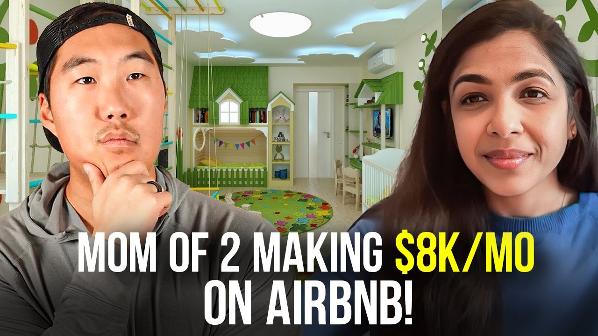

How a Mother of Two Makes $8K Monthly With Airbnb in the Poconos (2026 Case Study)
Pavi went from zero real estate experience to $8,000/month cash flow with her Poconos short-term rental while working full-time and raising two kids. Learn her exact strategies for market selection, local team building, and property optimization.


Use This Like a Tool
The point of this page is not more information. The point is better judgment before you act.
- Pull the real numbers first.
- Run a base case and a stress case.
- Use the result to make a cleaner decision, not a faster emotional one.
Pavi earns $8,000+ per month from her Poconos short-term rental while working full-time and raising two kids under five. Starting with zero real estate experience in 2022, this biomedical engineer built a vacation rental business that generates consistent cash flow year-round. Her Poconos property commands $500/night rates even in slower months and achieved Superhost status with all five-star reviews within her first few months of operation.
This case study breaks down exactly how Pavi transformed a previously failed Airbnb into one of the most booked spots in the Poconos, including her specific strategies for market selection, local team building, and the systems that make remote management possible for a busy working mom.
In this article:
Quick Results: Pavi's Airbnb Numbers
| Metric | Value | Context |
|---|---|---|
| Monthly Cash Flow | $8,000-$10,000 | Summer peak season |
| Properties | 1 STR + 1 Multi-unit | Poconos + New Jersey |
| Nightly Rate | $500 | Slow season average |
| Peak Season Projection | $8,000-$10,000/month | Summer months |
| Time to First STR | 6 months | From joining LIS |
| Superhost Status | Yes | All 5-star reviews |
| Property Appreciation | Increased | Within first 5 months |
| Management Style | Remote with local team | 2 hours from home |
Pavi's Background: From Biomedical Engineer to Airbnb Host
You don't need real estate experience to build a successful Airbnb business. Pavi came from an engineering background with 15 years in the medical device industry, juggling a demanding career while raising two young children. Her journey proves that methodical professionals can translate their skills directly into short-term rental success.
The Medical Device Career
Pavi moved to the United States from India in 2006 to pursue her master's degree in biomedical engineering. She later added an Executive MBA to her credentials, demonstrating her drive for continuous learning and advancement. For 15 years, she built her career at a medical device company, gaining experience in project management, problem-solving, and systematic thinking.
This corporate background became an unexpected asset in real estate. The same skills that helped her succeed in the medical device industry—detailed planning, risk assessment, process optimization, and stakeholder management—transferred directly to building and managing a short-term rental business.
Discovering Real Estate
In 2022, after years of successful career building, Pavi began asking herself what comes next. The medical device industry had been rewarding, but she wanted to achieve financial freedom and create generational wealth for her family. Real estate investing emerged as the path forward.
Rather than diving in blindly, Pavi took a methodical approach. She read books, studied the market, and eventually decided to get her real estate license. She studied at night after putting her kids (then ages 4 and 1) to bed, passing her exam in October 2022. This credential gave her deeper market knowledge and access to MLS data that would prove invaluable.
The Instagram Reel That Changed Everything
Pavi's introduction to Airbnb arbitrage came through an unexpected source—an Instagram reel. She describes finding content that resonated with her because of its genuine approach and step-by-step methodology.
"I stumbled on one of your Instagram reels and it just clicked with me—the genuineness with which you speak and the step-wise approach that you provide to help people educate and learn about what it even means for a newcomer like me who didn't know anything."
That discovery led her to join Legacy Investing Show in March 2023 when the community was still very small. She was among the first members and took a leap of faith based on the value she'd already received from free content.
The Airbnb Journey: From Cold Calls to Closing
First Cold Calls: The Rude Landlord Lesson
Pavi's original plan was to start with arbitrage—renting properties and subletting them as short-term rentals. She began researching markets and making cold calls to landlords, starting in North Carolina.
Her first significant call became a crucial learning experience. A landlord who owned 180 Airbnbs picked up and immediately called out what she was trying to do. He was rude but provided an invaluable nugget of wisdom that would shape her entire approach.
"He was like, 'I have 180 Airbnbs, so I know exactly what you're trying to do. You need to do more homework in understanding what the rules and regulations are.' My takeaway from that was yes, he was rude, but I got a very important nugget: the state short-term rental rules could vary from the county, could vary to the municipality, and if the house is in an HOA, they can change the rules anytime on you."
That conversation taught her two things: she needed to practice her pitch more, and she needed to understand regulations deeply before spending time calling landlords. It was a wake-up call that ultimately made her more effective.
Exploring Multiple Markets
Armed with new knowledge, Pavi explored several markets before finding her fit:
North Carolina: After researching the regulations more thoroughly, she realized the rules were changing unfavorably for short-term rentals. She moved on.
Seattle: She almost secured a deal here, but discovered that Seattle requires you to own the property to rent it out as an Airbnb—a deal-breaker for the arbitrage model.
South Carolina: An arbitrage opportunity nearly turned into a purchase when the landlord expressed interest in selling. However, the location required connecting flights, meaning 8+ hours of travel in an emergency. Too far for a first property.
Through this process, Pavi learned to leverage the Legacy Investing Show brand in her conversations. When landlords asked about her background, she could point them to the community.
"I leveraged your name—that helped me a lot. I don't have a brand, I'm starting out, but you have a brand. I would say, 'This is the mastermind group I'm part of—go check it out on Instagram, on Facebook.' And they did, and they were like, 'This looks actually very interesting.'"
Finding the Poconos Property
After exploring distant markets, Pavi and her husband made a strategic decision: for their first short-term rental, they wanted somewhere accessible within a single flight or, better yet, a drive. They landed on the Poconos Mountains—just 2 hours from their home in New Jersey.
Finding the right property took patience. They spent 6 weeks driving up every weekend to view different properties with their realtor. The key requirements:
-
Unique features: Something that would stand out from the numerous existing rentals
-
Favorable regulations: Rules vary dramatically even within the Poconos—some townships are STR-friendly, others just 5 minutes away are not
-
Location amenities: Walking distance to a lake and outdoor activities
-
Local knowledge: A realtor familiar with the area's shifting regulatory landscape
When they found the right property, they closed in August 2023 and spent the next 2-3 months setting it up.
How to Choose a Market for Airbnb: The Poconos Strategy
The Poconos is ideal for short-term rentals because it offers year-round demand within driving distance of multiple major metropolitan areas. Pavi's market selection process offers a blueprint for anyone considering vacation rental markets.
Why the Poconos Works
Proximity: Just 2 hours from New Jersey, the Poconos allowed Pavi to be on-site quickly if emergencies arose. For a first-time STR owner learning the business, this accessibility was non-negotiable.
Personal Familiarity: Pavi and her husband had vacationed in the Poconos themselves. They knew the area had appeal and understood what guests would be looking for.
Year-Round Demand: Unlike purely seasonal markets, the Poconos offers multiple demand drivers:
-
Winter: Skiing season drives strong January-February bookings (Pavi's property was fully booked during this period)
-
Summer: Lake activities, hiking, and outdoor recreation create peak demand
-
Year-round: Weekend getaways from NYC, Philadelphia, and New Jersey metros
Metropolitan Accessibility: The Poconos draws visitors from multiple major cities within a few hours' drive, creating a large potential guest pool that doesn't require air travel.
Pavi's Market Research Process
Before committing, Pavi evaluated several critical factors:
Pro Tip: Pavi emphasizes the importance of working with a local realtor who understands STR regulations. In areas like the Poconos, where rules change frequently and vary by municipality, this local knowledge can make or break a deal.
Airbnb Strategies That Actually Work: Pavi's Playbook
The difference between a struggling Airbnb and a thriving one often comes down to systems and relationships. Pavi's approach combines strategic planning with community building to create a business that runs smoothly from 2 hours away.
Strategy 1: The Local Team Connection
What it is: Spending extended time in the market during setup to build genuine relationships with locals who become your boots-on-the-ground team.
Why it works: Remote management is only possible when you have trustworthy people locally. By spending every weekend at her property during the 2-3 month setup period, Pavi naturally built connections that became her operational foundation.
How Pavi Built Her Team:
-
Attended the local church on Sundays
-
Met neighbors and community members organically
-
Found her cleaning team through church connections
-
Found her HVAC person through the same community
-
Built relationships with local businesses for guest recommendations
"I got to know a lot of locals. We would go on a Friday, spend the whole weekend there, I would attend the church on Sunday. I got to know people and that's where I found my awesome cleaning team—my HVAC person is a member of the same church. I just got to know so many people. Now I felt more part of the community."
Strategy 2: Video Walk-Through System
What it is: Instead of relying on photos after cleaning, conducting live video walk-throughs with your cleaner before each guest arrives.
Why it works: Photos can miss details, and cleaning standards can slip over time. Live video calls provide real-time verification and maintain quality standards consistently.
How Pavi Implements It:
-
Cleaners call via WhatsApp approximately 2 hours before guest check-in
-
They walk through the entire property on video
-
Pavi can spot anything that needs attention in real time
-
The cleaner finishes with a quick mop using pleasant-smelling oil
-
Everything is verified and fresh when guests arrive
This system gives Pavi peace of mind despite managing from 2 hours away. She knows exactly what the property looks like before each guest walks in.
Strategy 3: Strict House Rules and Guest Screening
What it is: Implementing clear house rules, using noise monitoring sensors, and proactively communicating with larger groups.
Why it works: Pavi's property was previously a failed Airbnb—the prior owner had issues with teenage parties that resulted in police calls and neighbor complaints. Clear rules and proactive communication prevent these problems.
Pavi's Implementation:
-
Installed noise monitoring sensors (not recording devices—just decibel monitors)
-
Property description clearly states "no parties allowed"
-
For larger groups (9+ people), sends a separate message reinforcing the no-party policy
-
Explains that the area has strict regulations to protect neighbors
Pavi also learned an important lesson about exceptions: when she made an exception to her own rules once, she had a bad guest experience. The takeaway was simple—stick to your rules consistently.
Strategy 4: Neighbor Relationship Building
What it is: Proactively building relationships with neighbors during the setup phase to create a support network and prevent complaints.
Why it works: The previous owner had neighbor problems because of party guests. By establishing relationships upfront, Pavi transformed potential adversaries into allies who help watch the property.
Pavi's Results:
-
Neighbors call her when packages are sitting outside
-
They offer to bring packages inside for security
-
No complaints despite the property's problematic history
-
Neighbors understand and support the STR business
"My neighbors are so amazing. Because we have built that relationship, if there's any package sitting outside, she would just give me a call and say, 'Hey, there's a package sitting outside, would you like me to put it inside?' Very supportive."
Strategy 5: Local Business Partnerships
What it is: Creating partnerships with local businesses that add unique value for guests while driving business to the community.
Why it works: Guests remember unique experiences. By partnering with local businesses, Pavi creates memorable stays that generate positive reviews and repeat bookings.
Pavi's Example: She contacted a local fishing company and negotiated a unique offering for her guests. Stay at her property, and you get a special experience with the local fishing business. This creates a win-win: guests get something unique, the local business gets customers, and Pavi's listing stands out from competitors.
Pavi's Airbnb Results: The Numbers
Pavi's Poconos property generates consistent cash flow with seasonal variations, proving that even a single property can create meaningful income. Here's the complete financial picture.
Complete Financial Breakdown
| Month | Performance | Notes |
|---|---|---|
| January (Launch) | Cash flow positive | Skiing season - fully booked |
| February | Higher revenue | Picked up weekday bookings, not just weekends |
| March | Slower | Shoulder season |
| Summer (Projected) | $8,000-$10,000/month | Peak season with consistent daily bookings |
Key Performance Indicators:
-
Nightly Rate: $500 (slow season)
-
Occupancy: High in January/February (skiing), projected higher in summer
-
Reviews: All 5-star ratings
-
Status: Superhost achieved
-
Airbnb Recognition: "Highly Recommended" badge (the one with olive leaves)
Beyond Cash Flow—The Ownership Benefits:
Pavi emphasizes that cash flow is only part of the picture when you own the property:
"In addition to the revenue and cash flow, there's a whole piece about investing. Our property is getting appreciated over time—I was just looking and noticed my own property has appreciated in the last five months. And I was able to write off a lot of these expenses in upgrading the property from my taxes."
Key Milestones Achieved
-
✅ Real Estate License: Obtained in October 2022 while working full-time with two kids
-
✅ First Multi-Unit Purchase: January 2023 (two-unit in New Jersey)
-
✅ Joined Legacy Investing Show: March 2023 (early member)
-
✅ Poconos Property Closed: August 2023
-
✅ Property Launched: Late 2023
-
✅ Superhost Status: Achieved within months of launch
-
✅ All 5-Star Reviews: Consistent quality from launch
-
✅ Property Appreciation: Increased value within 5 months
Airbnb Lessons: What Pavi Learned
These five lessons took Pavi from complete beginner to profitable Airbnb host. Each comes from real experience and could save you months of trial and error.
Lesson 1: Start Before You're Ready
The Mistake: Waiting for perfect conditions, perfect knowledge, or perfect timing before taking action.
What Pavi Learned: Pavi's journey was marked by learning through doing. She got her real estate license while working full-time with two toddlers. She made cold calls before she felt confident. She explored multiple markets that didn't work out before finding the Poconos. Each "failure" taught her something essential.
Her first cold call experience with the rude landlord who owned 180 Airbnbs could have discouraged her. Instead, she extracted the valuable lesson about regulations and improved her approach.
Why This Matters: Every successful investor has a story of early mistakes and learning experiences. The people who fail to launch are those who wait for conditions that never come.
"There is no perfect time to do it. It's never easy, it's never meant to be easy. So just take actions and work hard and it will pay off."
Lesson 2: Your Cleaners Are Everything
The Mistake: Picking the first cleaning service you find on Google without thorough vetting.
What Pavi Learned: The cleaner is the most critical team member in a short-term rental operation. Pavi's cleaner doesn't just clean—she's the eyes and ears of the operation. When the roof started leaking in February during winter rain, the cleaner already had a roofing contractor on the way before Pavi even knew about the problem.
Why This Matters: Even if you live 5 minutes from your property, you can't be there for every cleaning, every guest issue, every minor emergency. Your cleaner is often the first to notice problems and the one who can solve them fastest.
"My cleaner literally called and was like, 'Oh don't worry about it, I already called a roofing guy and there's somebody who's going to come in with the material—she sent him the pictures—he's going to come in and fix it up on Friday.' It's just the convenience piece. Once you establish that trust, it goes a long way."
Lesson 3: Stick to Your House Rules
The Mistake: Making exceptions to your own rules when guests ask nicely or situations seem special.
What Pavi Learned: Pavi had established clear house rules for her property. Once, she made an exception—and had a bad guest experience as a result. The lesson was immediate and clear: rules exist for a reason, and exceptions invite problems.
Why This Matters: Rules aren't arbitrary restrictions—they're systems that protect your property, your neighbors, and your business. When you make exceptions, you undermine the entire system.
Lesson 4: Transform a Failed Airbnb into Success
The Mistake: Assuming that a property with a bad STR history can't be turned around.
What Pavi Learned: Her property had failed as a short-term rental under the previous owner. Teenagers threw parties, police were called, neighbors complained. Many buyers would have seen this history as a red flag. Pavi saw it as an opportunity.
By taking the time to build neighbor relationships, implement strict rules, install noise sensors, and create systems for guest screening, she transformed the property's reputation completely.
Why This Matters: Failed Airbnbs are often available at better prices and in established STR-friendly areas. The previous owner's failure is often a management problem, not a property problem.
Lesson 5: Ownership Has Hidden Benefits
The Mistake: Only considering cash flow when comparing arbitrage to ownership.
What Pavi Learned: While Pavi started exploring arbitrage, she ultimately purchased her Poconos property. The decision revealed benefits beyond monthly cash flow: property appreciation within just 5 months, tax write-offs for all her upgrade expenses, and the security of building equity.
She acknowledges that arbitrage is excellent for building cash flow with less capital—and that's why she recommends it for beginners and is now looking at arbitrage deals herself. But ownership provides additional wealth-building benefits that shouldn't be overlooked.
"There is one piece about cash flow which is good, but then there's another piece about investing and building that portfolio and holding it for a longer term to get the benefits of appreciations and write-offs."
Best Tools for Airbnb Management: Pavi's Setup
Pavi manages her Poconos property from 2 hours away using a combination of technology and trusted relationships. Here's her essential toolkit.
| Category | Tool/System | Purpose | Why It Works |
|---|---|---|---|
| Communication | Video walk-throughs with cleaners | Live verification before each guest | |
| Noise Monitoring | Noise sensors | Party prevention | Alerts without recording—respects privacy |
| Furnishing | Wayfair, Amazon, All Modern | Property setup | Interior designer discount helped with costs |
| Team Management | Local relationships | Cleaners, HVAC, contractors | Community connections provide reliability |
| Guest Screening | Proactive messaging | Large group communication | Sets expectations before booking confirmed |
WhatsApp Video Walk-Throughs
What it does: Enables live video calls between Pavi and her cleaning team for property verification.
How Pavi uses it: Two hours before each guest check-in, her cleaner calls via WhatsApp and walks through the entire property on video. Pavi can spot any issues in real time and ensure everything meets her standards.
Pro tip: "We actually do a walk through. She calls me on WhatsApp and she literally just walks me through the whole property and we check on everything. That gives me the sanity that this is the latest state, because usually we do our walk-throughs 2 hours before a guest is coming in."
Noise Monitoring Sensors
What it does: Monitors decibel levels without recording conversations—alerts hosts to potential parties.
How Pavi uses it: The sensor alerts her if noise levels exceed thresholds, allowing intervention before neighbors complain. It's clearly disclosed in the listing so guests know it's there.
Pro tip: Mention the noise sensors in your listing description. This deters party-seekers from booking in the first place.
Local Team Network
What it does: Provides reliable boots-on-the-ground for everything from cleaning to emergency repairs.
How Pavi uses it: Her cleaning team manages about 15 different houses locally, giving them deep market knowledge. When issues arise—like a leaking roof—they already know who to call and how to handle it.
Pro tip: Your cleaner's experience with other properties is an asset. Cleaners who manage multiple STRs understand what guests expect and can anticipate problems.
Pavi's Advice for Working Parents
"There is no perfect time to do it. It's never easy, it's never meant to be easy. So just take actions and work hard and it will pay off."
If Pavi were advising other working parents looking to start in Airbnb, here's what she would say:
Your "Why" Will Carry You Through
When Pavi encountered setbacks—the rude landlord, the failed market explorations, the regulatory hurdles—her "why" kept her moving forward. She wasn't just chasing money; she was pursuing financial independence for her family.
The challenges of running an Airbnb while working full-time and raising two kids under five are real. But having a clear purpose makes those challenges surmountable.
"My why is really getting to financial independence. I knew it has to be a short-term rental, so I was just trying to figure out what the learning experience was from every one of those experiences."
Start in Your Backyard
Pavi's decision to focus on the Poconos—just 2 hours from home—was strategic. As a first-time STR owner with young children, she needed to be able to reach her property quickly if something went wrong.
The systems she built and the lessons she learned from this accessible first property now give her the confidence to consider more distant markets for her next investment.
Use Your Professional Skills
Pavi's biomedical engineering and corporate background gave her transferable skills: project management, systematic thinking, process optimization. Don't discount your professional experience—those skills translate.
Build a Community
Pavi emphasizes the value of being part of a community like Legacy Investing Show. The organized content gave her a checklist to follow, and the community provided motivation and shared learning.
Plan for the Long Term
Now that her Poconos property is operating successfully, Pavi is looking at arbitrage opportunities in the same market. Her goal: leverage her existing team of cleaners and contractors to expand without building entirely new systems.
"Instead of trying and creating a new team in another place, why not figure out if I can find arbitrage deals in the same market? It's going to be tough, but this is where the patience also comes in—just keep on making the calls, it's a numbers game."
Watch Pavi's Full Interview
Video highlights:
-
0:00 - Introduction and background
-
5:30 - The rude landlord cold call lesson
-
10:45 - Exploring multiple markets (NC, Seattle, SC)
-
15:20 - Finding the Poconos property
-
20:00 - Setting up the property and building the team
-
25:30 - Financial results breakdown
-
28:00 - Turning a failed Airbnb into success
-
30:45 - Advice for beginners
Frequently Asked Questions
How much money can you make with Airbnb while working full-time?
Pavi generates $8,000-$10,000/month during peak summer months from a single Poconos property while maintaining her full-time career in the medical device industry. Even during the slower months of January and February, she remained cash flow positive with $500/night rates. Her cleaners, who manage 15+ properties locally, confirmed that summer brings consistent daily bookings.
The key to managing this alongside a full-time job is building systems: a trusted local team, video walk-through verification, and clear house rules that prevent problems before they start.
Is it possible to start Airbnb investing with no real estate experience?
Absolutely. Pavi had zero real estate experience when she started in 2022. Her background was in biomedical engineering with 15 years in the medical device industry. She got her real estate license by studying at night after putting her kids to bed, joined Legacy Investing Show in March 2023, and closed on her Poconos property by August 2023.
Her professional skills—project management, systematic thinking, process optimization—transferred directly to building a short-term rental business. Most careers develop skills that are valuable in real estate.
What's the best approach for a working parent starting in Airbnb?
Pavi recommends starting with a property close enough to reach quickly—in her case, the Poconos at 2 hours from home. For a first-time owner learning the business, accessibility matters. She also emphasizes building a strong local team during the setup phase rather than rushing to launch.
The systems she built—video walk-throughs with cleaners, noise monitoring, proactive guest communication—allow her to manage remotely without constant attention, which is essential for any working parent.
Start Your Airbnb Journey
Ready to build your own Airbnb business like Pavi?
Learn more about Legacy Investing Show →
Related Success Stories
Helpful Resources
About Legacy Investing Show
Legacy Investing Show is Preston Seo's comprehensive Airbnb arbitrage training program. Since founding, the program has:
-
Trained 2,000+ students across the United States
-
Generated $10M+ in cumulative student revenue
-
Built an active community of short-term rental investors
-
Produced numerous students earning $10K+/month
Preston Seo has personally managed 40+ properties and generated over $400,000 in net profit from his Airbnbs. He created Legacy Investing Show to teach the exact systems that scaled his business, providing the mentorship, scripts, and community that accelerate success.
blog resources | Watch free training →
This case study is based on Pavi's video interview conducted in April 2024. All statistics and quotes are directly from Pavi's experience. Individual results vary based on market, effort, and capital invested.
Last updated: February 4, 2026
Preston Seo
Real estate investor and financial educator helping people build generational wealth through smart investing strategies.
Questions that matter before you act
Frequently Asked Questions
Pavi generates $8,000-$10,000/month from her Poconos short-term rental during peak summer months while working full-time in the medical device industry and raising two young children. Even during slower months like January and February (skiing season), she remained cash flow positive with $500/night rates.
Yes. Pavi had zero real estate experience when she started in 2022. She came from a biomedical engineering background with 15 years in the medical device industry. She got her real estate license while studying at night after putting her kids to bed, then purchased her first property within months of joining Legacy Investing Show.
Pavi chose the Poconos Mountains because it's only 2 hours from her home in New Jersey, has year-round demand (skiing in winter, lake activities in summer), and has strong vacation rental fundamentals. The location near lakes and outdoor activities drives consistent bookings.
Pavi took approximately 2-3 months to set up her property after closing in August 2023. She spent every weekend at the property working on setup, which allowed her to build relationships with locals, find her cleaning team, and establish connections with neighbors.
Pavi manages her Poconos property remotely through a trusted local team. Her cleaner does video walk-throughs via WhatsApp before each guest arrival, handles minor issues, and coordinates with local contractors. Building these relationships during the setup phase made remote management possible.
Yes. Pavi's property was a failed short-term rental under the previous owner who had issues with teenage parties and neighbor complaints. She transformed it by establishing neighbor relationships, implementing strict house rules, installing noise sensors, and screening guests more carefully.
Based on Pavi's experience, yes. She joined when the community was very small, followed the step-by-step checklist provided in the course, and credits the organized content with helping her navigate everything from LLC setup to property acquisition. She went from zero experience to owning a profitable STR within about a year.
Pavi notes three key benefits of ownership: 1) Property appreciation - her property increased in value within 5 months; 2) Tax write-offs - she deducted upgrade expenses from her taxes; 3) Higher returns long-term compared to arbitrage. However, arbitrage requires less upfront capital, which is why she recommends it for beginners.